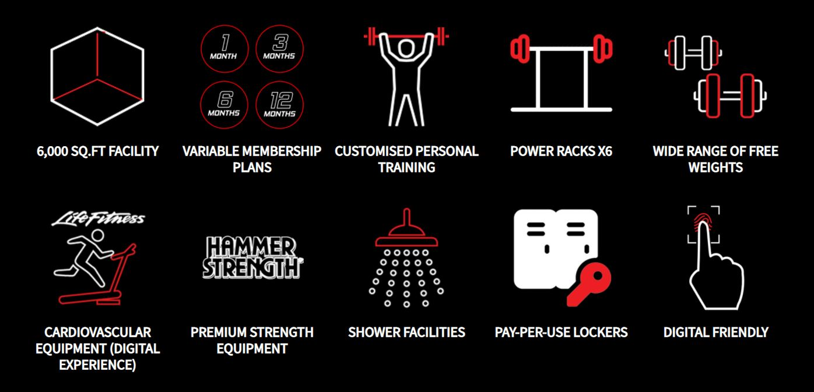

<!DOCTYPE html>
<html>
<head>
  <link rel="stylesheet" href="style.css">
 
</head>
</html> 
    <meta charset="utf-8" />
    <title>Home</title>
</head>
<body>
<center></center>
    <center><nav align="center">
        <a href="index.html">Home</a> |
        <a href="rates.html">Programmes/Rates</a> |
        <a href="gallery.html">Gallery</a> |
        <a href="contactus.html">Contact Us</a> 
    </nav></center>

<h2 align="center" style= color:red> <ins>Welcome to Gymmboxx</ins> </h2>
<p align="center" style=color:white> Established in October 2010, GYMMBOXX started as a single gym situated at the top of a multi-storey car park in Singapore (Bedok Reservoir). Over the years, GYMMBOXX has made its mark as Singapore’s affordable premium gym brand, serving the residential neighbourhoods and heartlands. With more than 6 gyms (and counting) island-wide, GYMMBOXX will continue to expand and bring quality gym facilities and service to the rest of Singapore and beyond.
</p> 
<h2 align="center" style= color:red><u> Objective</u></h2>
<p align="center" style=color:white> Our primary objective as a team is to push your overall performance further than you can imagine. Whether your goal is fat loss, strength/conditioning, muscle building, athletic performance or injury rehab, you can be rest assured that you are in good hands. </p>
<br> 
<hr>
<h2 style="float:right"><iframe width="700" height="400" src="https://www.youtube.com/embed/LASOaAOm6ac" frameborder="0" allow="accelerometer; autoplay; clipboard-write; encrypted-media; gyroscope; picture-in-picture" allowfullscreen></iframe></h2>
<br>
<br>
<br>
<h3 style="text-align:left; width:200px height:200px"> <u>GYMMBOXX BISHAN</u> <br><br> GYMMBOXX Bishan is located at Bishan Community Club, Level 4. This outlet is equipped with an interactive cardio line, a spacious functional area with the latest trending fitness accessories and an extended 31m lunge track. Sign up with us to build a fitter tomorrow, TODAY! <br> <br><u>Opening hours</u> <br><br> Open 24 Hours for you, ALL DAY EVERYDAY</h3>
<br>

<hr> 
<br>

 

<h2 align="center"><u> Facilities </u></h2> 
<center></center>
	
<hr>

<h2 align="center"><u> Location </u></h2> 
<center></center>
	
<hr>

<h2 align="center"> <u>How to get there! </u></h2> 

<center><iframe src="https://www.google.com/maps/embed?pb=!1m18!1m12!1m3!1d3988.7109814226083!2d103.84865351533105!3d1.3499304619498167!2m3!1f0!2f0!3f0!3m2!1i1024!2i768!4f13.1!3m3!1m2!1s0x31da171400a6356d%3A0x1889d0456bf6a9cf!2sGYMMBOXX%20Bishan!5e0!3m2!1sen!2ssg!4v1612365734316!5m2!1sen!2ssg" width="600" height="350" frameborder="0" style="border:0;" allowfullscreen="" aria-hidden="false" tabindex="0"></iframe></center>


<br>
 <hr>


</body>
</html>